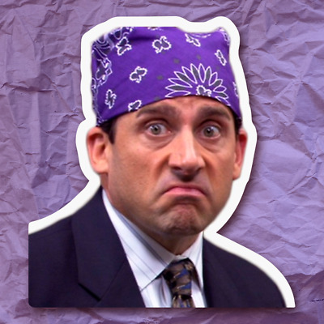

"The worst thing about prison was the... was the Dementors.
They... were flying all over the place, and they were scary.
And they'd come down, and they'd suck the soul out of your body, and it hurt!"

Previously on DB; Michelangelo got out the clink.
Previously on DBZ; Ate nothing but gruel! All the food was gruel!
Previously on DBS; kidnapped Dumbbledors son, and got away with it.